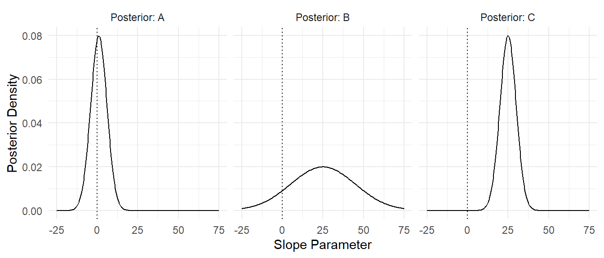
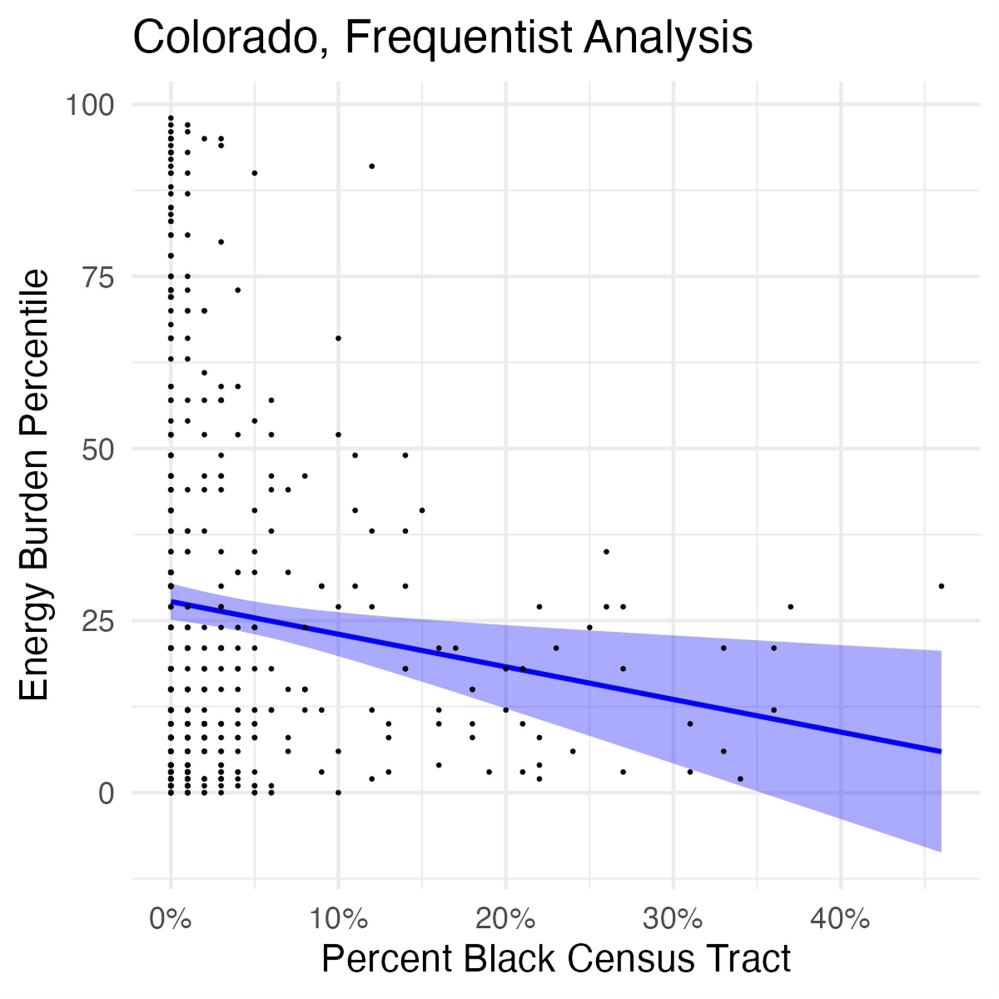

Surprise - They’re Different!
Comparing Frequentist and Bayesian Instructional Approaches
Abstract
Implementing quantitative methodological techniques is a crucial piece of public policy and political science instruction. While Frequentists statistics are most commonly used when teaching quantitative methods in the social sciences, little research exists on using Bayesian approaches in the classroom, or how the outcomes from traditional quantitative approaches differ from a Bayesian approach. We propose an applied learning activity for students of political science and public policy that exposes them to Bayesian methods and explores the differences between this statistical paradigm and more commonly used approaches. We do this using a structured interrogation of the The Climate and Economic Justice Screening Tool (CEJST) and the epistemological framings in the 5E model (Elby and Hammer 2010; Duran and Duran 2004). The activity illustrates the importance of statistical assumptions, and by extension, the impact that using different quantitative methods has on real-world outcomes. The goal of the study is to introduce students, instructors, and practitioners to a new way of using statistics, equipping them with the tool set and logical processes necessary to apply either approach as they interrogate social science problems.
Introduction
Social scientists routinely make use of quantitative methods to understand the complex world around them. Approaches employed range from quasi-experimental, spatial diffusion, and econometric techniques, to methods that are more qualitative in nature. While Bayesian approaches are not completely missing from political science and public policy (see Gill and Witko 2013; Fienberg 2011), they are underutilized as a method taught among social science academics and practitioners. This omission is for a few reasons. First, scholars and practitioners in government and public policy spaces often are not exposed to Bayesian methods when they are taught quantitative techniques (Gill and Witko 2013). Thus, the lack of familiarity or the “mindset shift” required for learning the methods means Bayesian techniques are not a regular tool in their toolkit (Ferrari 2022). Second, the reliance on infusing subjective priors into the methodological approach tends to be questioned by non-statisticians who have received more traditional Frequentist training in their disciplines (Fienberg 2011; Freedman 1997).
To remedy this, we propose an applied learning activity for students of public policy and political science that exposes them to Bayesian methods, focusing on both the theoretical and practical underpinnings of the approach. The activity explores the differences between Bayesian approaches and more commonly used statistical techniques to introduce students, instructors, and practitioners to new and different ways of using statistics to investigate real-world problems. Through the application of this activity, these methods will equip different audiences with the tool set and logical processes necessary to apply different quantitative approaches when studying political science and policy problems. More importantly, using this activity in social science classrooms will encourage students to interrogate and challenge differences in the assumptions made, and outcomes produced, in the statistical approaches they are taught.
What follows is an in-depth examination of how teaching different quantitative methods results in a more robust way of interrogating political science and public policy problems. We start by reviewing the research to date on cross-disciplinary approaches to using quantitative methods, as well as how this influences students’ assumptions about their own learning using the epistemological framings in the 5E Model (Elby and Hammer 2010; Duran and Duran 2004). Next, we introduce our applied activity and describe its implementation in the classroom. We conclude with a discussion on the importance of incorporating Bayesian statistics into non-statistics classrooms, as well as extensions of the activity.
Statistical Inference for Social Scientists
Conveying complex concepts and analytical techniques is one of the most challenging aspects of teaching (Bates and Jenkins 2007). In addition to distilling topics down to make them accessible to all students, instructors are frequently tasked with ensuring that the topics learned in class translate “out in the wild” when students enter their respective professions. This is true in the social sciences and other non-statistics disciplines, where students are tasked with translating what they know into evidence-based practices. While the theories underpinning non-statistics subjects can be challenging to understand, layering the quantitative methods typically needed to test research questions on top of these theories can create added challenges. Too often the methods and theories, alongside the question of usefulness outside of the academy, make it difficult to link analysis and political and policy practices together (Connelly et al. 2021).
What is more, students who are not statistics majors frequently become anxious and tend to avoid quantitative methods unless the methods are contextualized and the connection between their subject and technical approach seems clear (Gunn 2017). Nonetheless, quantitative methods-particularly statistical inference-are a must for social science students. Most students take at least a one to three class sequence on quantitative methods as undergraduates. These usually include some form of research methods, followed by an applied class that teaches traditional Frequentist statistical inference (for example, Null Hypothesis Significance Testing (NHST)).
Some political science and public policy scholars have tried to incorporate Bayesian philosophy and principles into how estimation is taught among their students. For instance, Ferrari (2022) proposes implementing a basic four-step modeling approach that gets students to shift their thinking from Frequentist to Bayesian. Similarly, Gill and Witko (2013) offer an accessible introduction to Bayesian analysis for students of public administration and policy, arguing that understanding the theoretical differences between the two approaches is critical, and that Bayesian techniques are more appropriate for the discipline. Wagner and Gill (2005) make a similar argument, stressing that Bayesian inference is “better suited” for answering public policy questions, showcasing their application on educational outcomes in public schools. Indeed, they even go so far as to say that the traditional statistical inference methods taught in public administration and policy programs is “defective and should be replaced (Wagner and Gill 2005, 5)” because they are borrowed from other disciplines and do not necessarily fit their research challenges. Finally, Luque and Sosa (2023) use a series of different scenarios to demonstrate ways in which to incorporate Bayesian methods into real-world social inquiries. They do this by way of inferential comparisons between Frequentists and Bayesians, underscoring the differences between the two approaches both theoretically and in practice.
Activating Epistemological Frames
One of the primary points stressed in the research advocating for Bayesian inference in non-statistics classrooms is not to simply introduce another applied tool without much thought; rather, offering different philosophies and theoretical approaches in addition to the tool is crucial to employing effective analytical practices. In social science quantitative methodology teachings, intellectual development often starts with a “surface approach”, where students memorize and repeat facts that inform them, rather than engaging with or reflecting on the approaches they have learned (Entwistle 1997; Bates and Jenkins 2007). Our goal, in addition to offering a Bayesian learning activity, is to move beyond the surface approach, empowering students with the knowledge to choose between different statistical approaches based on what is productive for the context at hand. This starts with epistemological framings, or the nature of knowledge and understanding among students (Elby and Hammer 2010).
At its most basic level, epistemology is concerned with the methods and theories that help understand knowledge origins and acquisition. Epistemological framings are created from personal cognitive resources, such as beliefs, that are activated among individuals conditional on the context they are in (Elby and Hammer 2010, 3). These cognitive resources provide a framework with which individuals can form their understanding of the “nature of knowledge, knowing, and learning”, and are often variable and something that the person may not be aware of (Elby and Hammer 2010, 4). An epistemological frame is when individual resources that are reinforced by one another are activated and lead to knowledge stability (Elby and Hammer 2010, 6). These frames are the expectations that someone brings to different experiences and scenarios, which in turn influences their actions.
In the context of the classroom, epistemological frames organize activities in the classroom for students, which in turn affects their knowledge and learning. Students who can recognize and critique the assumptions underpinning their analyses (treating them as tentative), but carry out their analyses respecting those analyses (treating them as true) will likely be more effective as practicing statisticians in their discipline. Getting students to recognize the importance of assumptions—and to practice adopting different assumptions—is a critical first step in developing these multiple epistemological framings.
The goal of our activity is to activate students’ epistemological frames by structuring it around the 5E Model proposed by Duran and Duran (2004). The 5E Model is based on constructivist pedagogies and rests on the notion of inquiry-based teaching, or having students discover information on their own without the direct help of instructors (Duran and Duran 2004; Uno 1999). The 5E model is captured in the following figure:

Each of the E’s represent: Engage: Get students interested; Explore: Students do self-directed inquiry; Explain: Give students conceptual tools; Elaborate: Let students work with the tools; and Evaluate: Assess the learning outcomes. We turn next to the applied activity, where students compare Frequentist and Bayesian approaches as applied to a real-world problem.
Applied Activity: Comparing Frequentist & Bayesian Approaches
To alleviate some of the challenges that come with teaching different techniques of statistical inference, scholars have compared Frequentist and Bayesian approaches to one another, highlighting where they are similar and when they diverge (Samaniego 2010; Ferrari 2022). We do something similar, using a public policy example to guide our comparison. The activity is focused on a real dataset, and students follow a structured process to analyze the dataset and interpret their results. However, different groups receive different versions of the activity: some receive a Frequentist approach, while the others receive a Bayesian approach. By carefully crafting the analyses to reach different conclusions, the aim is to surprise students with diverging conclusions. The activity concludes with a final full-group discussion, where the importance of statistical assumptions are highlighted, completing the comparison of Frequentist and Bayesian approaches.
The activity learning objectives are three-fold. First, students should be able to evaluate multiple hypotheses using inferential statistics; second, students should be able to connect their evaluation of hypotheses to real-world factors; and third, students should be able to state the primary statistical assumptions for Frequentist and Bayesian inference, and understand how they can lead to different conclusions. These learning objectives stem from our overall learning goal of engineering a “classroom controversy” to motivate students to find their own understanding of how Frequentist and Bayesian assumptions can lead to different conclusions (and by extension, real-world decision-making).
Activity Materials
All materials were created using the programming language R and can be rendered in .html or .pdf format for use. The materials are openly available for instructors on our GitHub repository. Important starter documents include the run of show, which outlines at a high level the different steps of the activity, as well as the artifacts used in the activity. Further, the learning objectives and details of the activity are fleshed out in the introduction document. The complete applied activity documents for both the Bayesian and Frequentist approaches are in the activity development folder in the GitHub repository. Instructors can watch a video overview of the activity on YouTube, and can use the Makefile available in our repository to compile both student and instructor-facing artifacts, the latter of which contains solutions and other notes for running the activity.
Activity Approach
To implement the activity, there are four steps:
- Setting the context for the real world problem the class is exploring
- Introducing the motivation for the activity (statistical approaches) given the context
- Doing the applied activity
- Closing out the activity
Using the 5E Model, we focus on the applied learning aspects of the activity, or the application of a statistical approach on current issues. For example, for engage the goal is to motivate students with current issues around climate and equity. The explore stage is the opportunity in which students get to do self-directed inquiry. For this activity, that means investigating the real-world dataset provided to them in small groups. Explain gives the students the conceptual tools they need to understand the different statistical approaches. Students will learn the basics of assessing and interpreting a fitted statistical model. For elaborate, students get to work with the tools, meaning they apply the conceptual tools they learned to the real-world dataset. Finally, evaluate involves giving students the opportunity to reflect on their understanding of the concepts and application they just did through an instructor-facilitated class discussion.
Important to this approach is the role of the student. While the instructor is there to facilitate questions and the general cadence of the activity, the onus is on students to work through each of the steps of the activity. This is a fundamental tenant of the 5E model, where inquiry-based learning is key to students discovering information and learning.
Problem Context
We start our activity by introducing The Climate and Economic Justice Screening Tool (CEJST). The CEJST is the result of President Biden’s Executive Order 14008 issued in January 2021. The tool is used to identify and subsequently help communities disadvantaged by the burdens stemming from climate change in government social programs. While the data covers a number of burdens, we focus on the sustainability aspects of the tool for our activity, including climate change, energy, and legacy pollution burdens on communities.
We begin with a straightforward explanation of the dataset, situating it in the contemporary dialogue around climate change. Specifically, we theorize there may be a relationship between climate change burdens and minorities residing in Census tracts. By providing them with this context, we get students to think about possible questions and hypotheses they may be able to explore using statistical inference.
To dig into the context of our real-world problem further, we also provide embedded code snippets and output from R of some high-level exploratory data analysis (EDA) for the students to review and discuss. We begin by focusing our attention on a few variables of interest for EDA. We start with the energy burden percentile, which captures the percentile of energy cost as well as energy-related pollution within a census tract, as well as the percent of African-American or Black alone, which captures the percent of African-American or Black individuals in a census tract.1 After students have investigated the dataset and have a more thorough understanding of the problem at hand, the students turn their attention to the introduction document.
Activity Introduction
This portion of the activity starts with the instructor walking students through the learning objectives and warm-up questions, which in turn initiates a group-wide discussion on statistical inference. The instructor has the students discuss inference at a high level, offering a more pointed discussion if needed around crafting a research question and hypotheses. At this point, the instructor turns students to the simplified critical differences one-pager that introduces them to the primary differences between the Frequentist and Bayesian paradigms. To keep the exercise manageable, we focus students’ attention on general inference and model summaries.2 Table 1 and Table 2 showcase the critical differences one-pager containing information on general inference and model summaries:
| Frequentist | Bayesian |
|---|---|
| Deduction from Pr(data \(|\) H0), by setting \(\alpha\) in advance | Induction from Pr(\(\theta\) \(|\) data), starting with Pr(\(\theta\)) |
| Accept H1 if Pr(data \(|\) H0) < \(\alpha\) | 1−\(\alpha\)% of most likely parameter values fall within a 1−\(\alpha\) HPD |
| Accept H0 if Pr(data \(|\) H0) ≥ \(\alpha\) |
| Frequentist | Bayesian |
|---|---|
| Point estimates and standard errors | Descriptions of the posterior distribution such as means and quantiles |
| 95% confidence intervals indicating that 19/20 times the interval covers the true parameter value | Highest posterior density intervals indicating region of highest posterior probability |
| 1−\(\alpha\)% of most likely parameter values fall within a 1−\(\alpha\) HPD |
The introductory discussion of the activity wraps up by introducing the research question and associated hypothesis the class will test with their respective statistical approach.3
Activity Application
For the activity application, students are assigned a number generated by a random number generator and put into groups to go through an applied statistical analysis. There are two versions that are circulated: the Frequentist analysis and the Bayesian analysis. The analyses that are given to the students are already completed-they only receive the output of the analysis with associated questions to help them think through the different parts of the analysis before they come to any conclusions.
The data used for each analysis is the exact same for both of the groups, as is the hypothesis that the students are testing. Additionally, the students are asked to assess the same conceptual things, regardless of which statistical approach they receive. They will use the general inference and model summaries comparison discussed in the Section 3.1.2 to diagnose the outputs of the models from the analyses.
Frequentist Analysis
Both activities begin with a quick overview of the hypothesis the students are testing, as well as the different components of a statistical model. For the Frequentist model, the analysis document introduces the following model, where \(B\) as the dependent variable (energy burden percentile), \(P\) is the percent black, \(m\) is the slope parameter, \(b\) is the intercept parameter, and \(\epsilon\) captures the error term.
\[{B = m P + b + \epsilon}\] The instructor encourages the class to think through how to interpret estimates in a linear model using Frequentist statistics, noting a number of important assumptions along the way in questions are asked about the model, including that the \(b\) and \(m\) parameters are fixed but unknown values. This is a natural place for a number of questions to be asked of the class related to model summaries and general inference. The questions below illustrate what the class is asked for understanding model summaries in a Frequentist model, along with the associated answers:
After students have revisited the concepts around model summaries and general inference for the Frequentist linear model, they move to a predictive model where they are given a number of predicted versus observed value plots, show below, for the model across three states: Massachusetts, Colorado, Florida, and the entire sample of data (e.g., the U.S.).

Additionally, they are given the intercept and slope estimates, as well as the confidence intervals for each model.

Once they have seen the results for each of the states and the U.S., students are given a set of questions that encourage them to think about the model results knowing what they do about model summaries and general inference. At this point, the students are exploring the results of the model in their respective groups and discussing and answering together the questions provided to them.
Bayesian Analysis
The cadence of the Bayesian analysis largely mirrors the Frequentist analysis to begin. Like the Frequentist groups, the Bayesian groups also revisit the hypothesis they are testing, as well as the different components of a statistical model, though this time it is a Bayesian linear model.
\[ B = m P + b + \epsilon \]
where \(B\) is the energy burden percentile, \(P\) is the percent Black, \(m\) is the slope parameter, \(b\) is the intercept parameter, and \(\epsilon\) is a residual term that represents factors not accounted for in the model. The residual term is assumed to be normally distributed \(\epsilon \sim N(0, \sigma^2)\) with an unknown parameter \(\sigma^2\). All three parameters have a prior distribution, defined via:
\[ \begin{aligned} m \sim N(\mu_m, \sigma_m^2), \\ b \sim N(\mu_b, \sigma_b^2), \\ \sigma^2 \sim \text{Exponential}(1/s_y), \end{aligned} \] where \(m, b, \sigma^2\) are independent. The class discusses how to set the prior through its parameter values \(\mu_m, \mu_b, \sigma_m^2, \sigma_b^2\) later in the activity. The instructor also discusses model assumptions for the Bayesian approach at a high level, stressing one of the fundamental differences between Frequentists and Bayesians: the intercept \(b\) and slope \(m\) parameters are treated as random variables with a distribution that represents our state of knowledge.
As with the Frequentist analysis, there are a number of questions asked of the class related to model summaries and general inference for the Bayesians. This time, however, students are shown the posterior distribution for the slope (\(m\)) and intercept (\(b\)) for a fitted model using Massachusetts data. The idea here is to get students thinking about how confident they should be in drawing conclusions from the model. After they have seen the distributions for these parameters, they are shown three different posterior distributions for the slope parameter so they can make sense of the results from the posterior:
Students are then asked a series of questions, a sample of which are below, to get them thinking about what the posterior distribution captures:
The students have the opportunity to look more closely at the slope parameter for Massachusetts and discuss it in the context of general inference. The students should recognize that a positive slope is in agreement with the hypothesis they are exploring before moving to the predictive portion of the Bayesian analysis, studying the posterior predictions.
To further stress the differences between the two approaches, the activity notes that a prior distribution must also be provided for all of the components of the model. These priors represent all of our prior knowledge about the real-world problem the students are trying to solve. It also ties all of the pieces together, importantly that a fitted Bayesian model is comprised of the data + prior = posterior. The activity walks the students through hypothetical scenarios where different prior distributions are used for the slope parameter when fitting the model with the Massachusetts data. This also shows the utility of a Bayesian approach when you have limited data, as it allows us to incorporate prior knowledge, a scenario we use in the activity.
We employ a sequential Bayesian analysis by using the posterior from one analysis as the prior for a new analysis. We provide the following to the students in the Bayesian group and have the students pick a state’s prior distribution for the rest of the activity:

This represents a critical step in the activity for the Bayesians: they must pick their prior distribution based on their beliefs about what they think the slope parameter should be. This will subsequently be used with new data to form a posterior distribution later in the activity. Each of the results are placed in an envelope, only to be opened once selected by a group. The following figure represents an example of the sequential Bayesian analysis used in the full activity that students will have to choose from and interpret. On the left are the results showing the fitted lines and slope posteriors for Florida using priors from Massachusetts, Minnesota, and New Hampshire. On the right are the results showing the fitted lines and slope posteriors for Colorado, also using priors from Massachusetts, Minnesota, and New Hampshire.

Activity Closing
Once done with the applied portion, groups come back together for a full-class discussion. In addition to students jotting down any remaining questions they may have about each of the following questions, they are posed to the whole class for discussion and are tied to the learning objectives in Section 3:
- What can we say about our hypothesis?
- How would you answer our research question now that we have analyzed the data?
- What can we conclude about the relationship between sustainability and disadvantaged communities? What might you recommend from a policy-making perspective?
We use these questions for a few reasons. The first is so the entire class can hear the impressions of both groups regarding the statistical approach used in their analyses. The second is to play into the “controversy” or differences between the approaches to further engage students on the importance of assumptions for statistical conclusions. The instructor facilitates a debate between the two groups using the critical differences one-pager discussed in Section 3.1.2. Each group likely thinks their conclusions are “correct” based on their analyses, however it is important to point out that the controversy cannot be resolved; rather, the results from our analyses are conditional on the assumptions chosen, implying that choosing appropriate assumptions is critical to a sound analysis.
Discussion
This activity bridges the gap between the common Frequentist approach oft taught in both undergraduate quantitative methods classes and the Bayesian paradigm, to which many students have not been exposed. We believe that non-statistics disciplines, such as political science and public policy, are an arena with which Bayesian methods can be very beneficial. To bridge this gap, we use an applied approach with real world data. While many teaching methods highlight the theoretical similarities and differences between Frequentists and Bayesians, our activity moves beyond this by grounding the comparison in a real-data application. In doing so, we hope to introduce students to a new way of using statistics, equipping them with the tool set and logical processes necessary to apply either the Frequentist or Bayesian (or both) approaches as they see fit.
Our activity uses an active learning approach, rather than relying on passive lecture. Active learning has been shown to result in superior learning outcomes for students, particularly those from underrepresented groups (Freeman et al. 2014). We do this by structuring our activity around the 5E Model proposed by Duran and Duran (2004), which activates students’ epistemological frames. The 5E Model is based on inquiry-based teaching, where students engage, explore, explain, elaborate, and evaluate statistical assumptions in an applied setting in order to promote broader impacts of inferential thinking with respect to statistics.
The activity described here is intended as a “minimum viable activity.” Future avenues for extending this work include having students swap groups. Students in this activity only have the chance to engage deeply with only one of the two paradigms—Frequentist or Bayesian. A simple extension of the activity would be to have students re-do their analysis, but switch their approach. This will enable a more nuanced comparison between Frequentist and Bayesian techniques, which would add depth to the learning outcomes for students. The second extension is to create an interactive dashboard. Our initial design for the activity relies on students’ ability to code in R. While this is feasible in many institutional contexts, it would limit the portability of the activity to contexts where programming skill is not so common. Thus, a no-code version of the activity would make it more accessible. Another extension of the activity would be providing additional contexts and datasets. Our initial work uses a single context and dataset for the activity, however this could be re-designed to use a different context, which would promote the generalizability and impact of the activity.
Finally, our more speculative research goal—to promote more nuanced epistemological framings among students—has further potential impacts, which a survey implemented to the class before and after the activity may capture. Elby and Hammer (2010) argue that a “sophisticated” personal epistemology is actually achieved when one has access to multiple epistemological framings and can choose to switch between them based on what is productive for the context at hand. Students who can recognize and critique the assumptions underpinning their analyses, but carry out their analyses respecting those analyses, will likely be more effective as practicing statisticians. Getting students to recognize the importance of assumptions—and to practice adopting different assumptions—will be a critical first step in developing these multiple epistemological framings.
References
Bates, Stephen R, and Laura Jenkins. 2007. “Teaching and Learning Ontology and Epistemology in Political Science.” Politics 27 (1): 55–63.
Connelly, Steve, Dave Vanderhoven, Robert Rutherfoord, Liz Richardson, and Peter Matthews. 2021. “Translating Research for Policy: The Importance of Equivalence, Function, and Loyalty.” Humanities and Social Sciences Communications 8 (1): 1–11.
Duran, Lena Ballone, and Emilio Duran. 2004. “The 5E Instructional Model: A Learning Cycle Approach for Inquiry-Based Science Teaching.” Science Education Review 3 (2): 49–58.
Elby, Andrew, and David Hammer. 2010. “Epistemological Resources and Framing: A Cognitive Framework for Helping Teachers Interpret and Respond to Their Students’ Epistemologies.” Personal Epistemology in the Classroom: Theory, Research, and Implications for Practice 4 (1): 409–34.
Entwistle, Noel. 1997. “Contrasting Perspectives on Learning.” The Experience of Learning 2: 3–22.
Ferrari, Diogo. 2022. “Teaching Bayesian Statistics.” PS: Political Science & Politics 55 (1): 230–35.
Fienberg, Stephen E. 2011. “Bayesian Models and Methods in Public Policy and Government Settings.”
Freedman, David. 1997. “Some Issues in the Foundation of Statistics.” Topics in the Foundation of Statistics, 19–39.
Freeman, Scott, Sarah L Eddy, Miles McDonough, Michelle K Smith, Nnadozie Okoroafor, Hannah Jordt, and Mary Pat Wenderoth. 2014. “Active Learning Increases Student Performance in Science, Engineering, and Mathematics.” Proceedings of the National Academy of Sciences 111 (23): 8410–15.
Gill, Jeff, and Christopher Witko. 2013. “Bayesian Analytical Methods: A Methodological Prescription for Public Administration.” Journal of Public Administration Research and Theory 23 (2): 457–94.
Gunn, Andrew. 2017. “Embedding Quantitative Methods by Stealth in Political Science: Developing a Pedagogy for Psephology.” Teaching Public Administration 35 (3): 301–20.
Luque, Carolina, and Juan Sosa. 2023. “Bayesian Analysis for Social Science Research.” arXiv Preprint arXiv:2306.11966.
Samaniego, Francisco J. 2010. A Comparison of the Bayesian and Frequentist Approaches to Estimation. Vol. 24. Springer.
Uno, Gordon E. 1999. “Handbook on Teaching Undergraduate Science Courses: A Survival Training Manual.” (No Title).
Wagner, Kevin, and Jeff Gill. 2005. “Bayesian Inference in Public Administration Research: Substantive Differences from Somewhat Different Assumptions.” International Journal of Public Administration 28 (1-2): 5–35.
Footnotes
While we guide our students to the variables we want to explore for this implementation of the activity, instructors can modify the activity such that students explore the dataset and identify variables of interest on their own. If they know how to use statistical software, they can also conduct the EDA and analyses in
Ron their own, rather than giving them the completed version as we do here.↩︎You can access the full one-pager that is instructor-facing on the associated GitHub repository. In addition to comparing general inference and model summaries, it also includes comparisons between fixed variables, interpreting probabilities, and model inference.↩︎
An extension of the activity could have the students develop the research questions and hypotheses on their own. Given the activity we implemented is meant to span one class period, we provide those for the students.↩︎